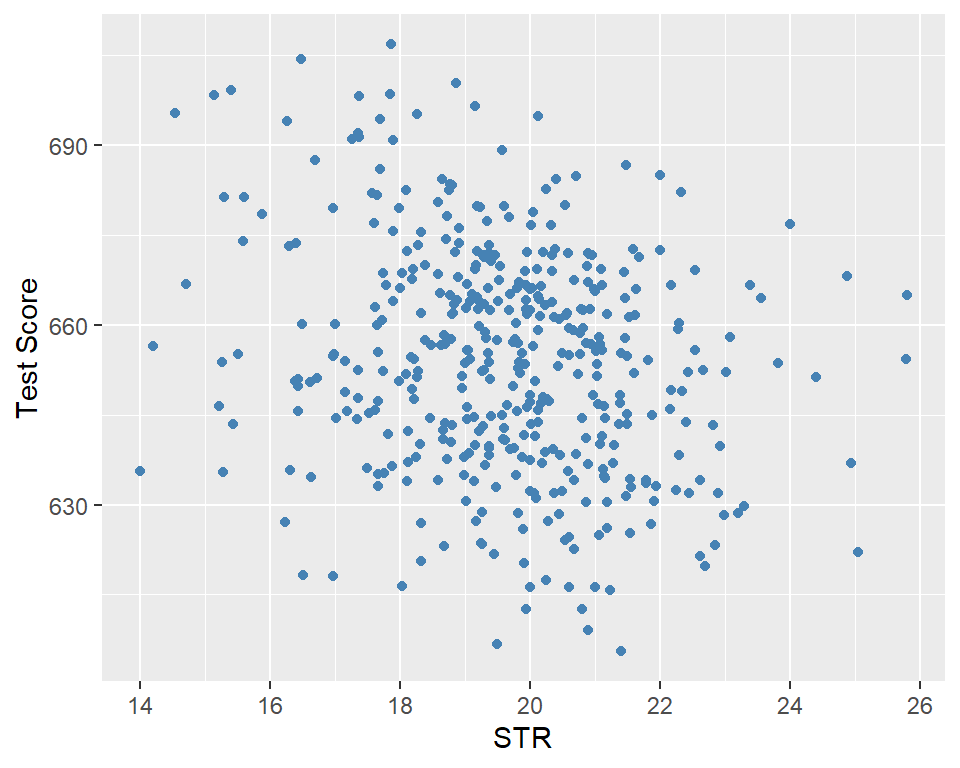
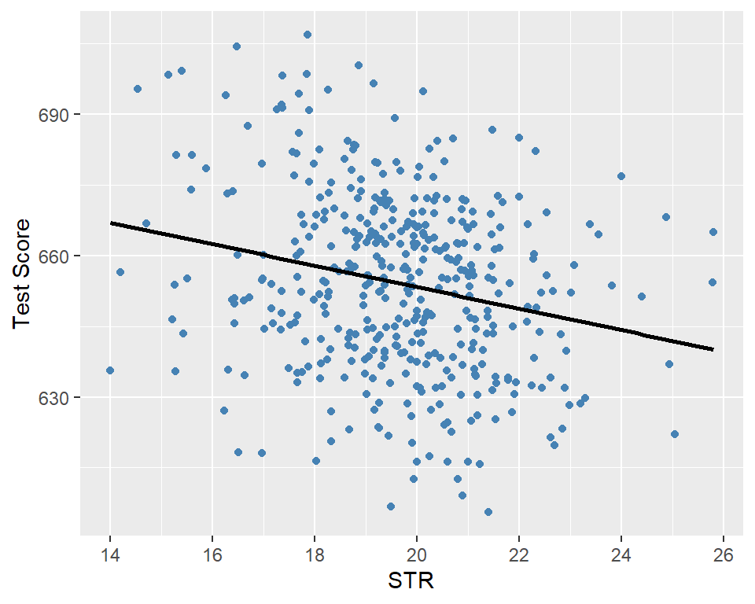
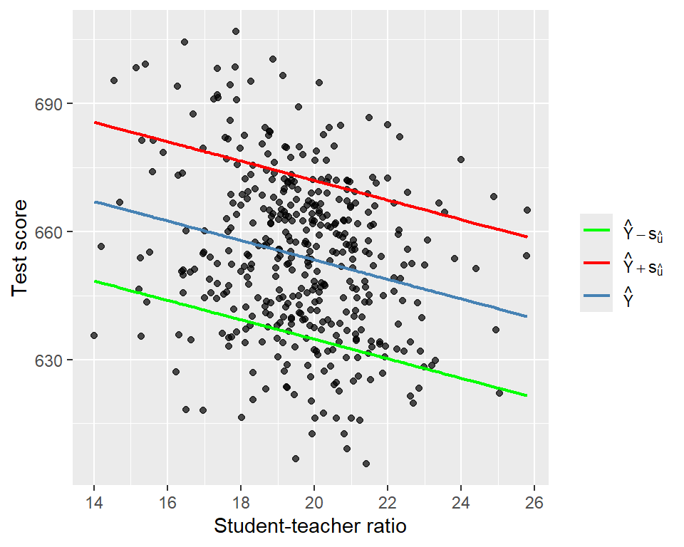
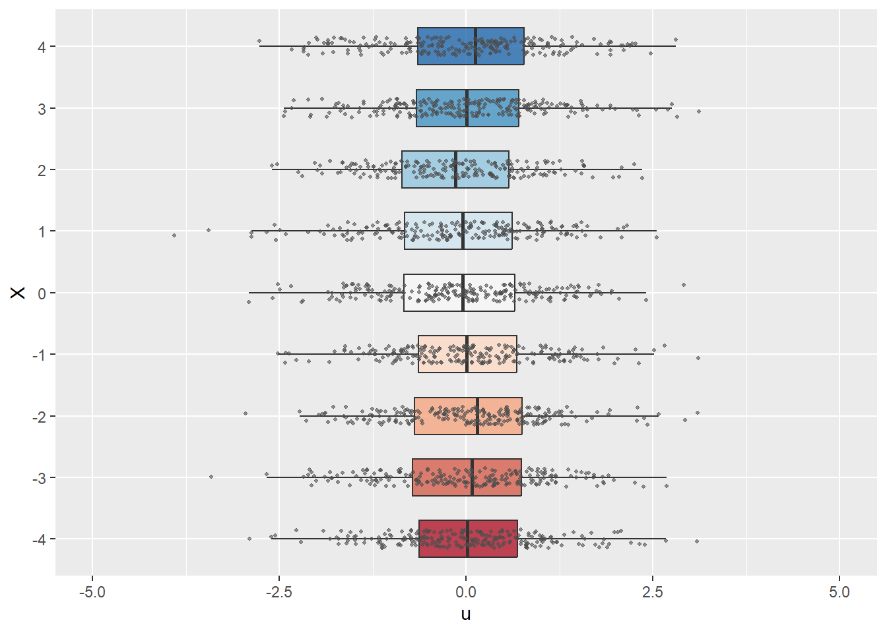
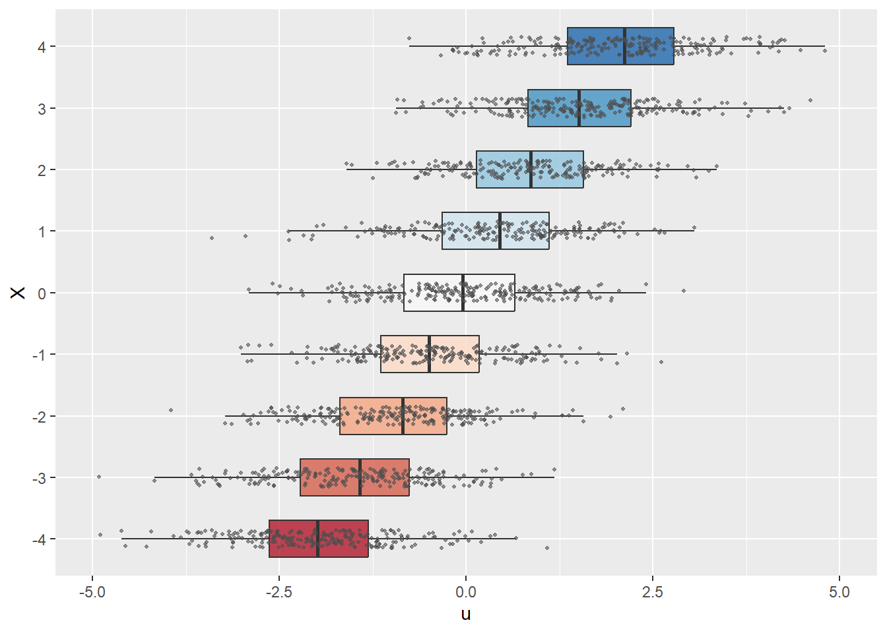
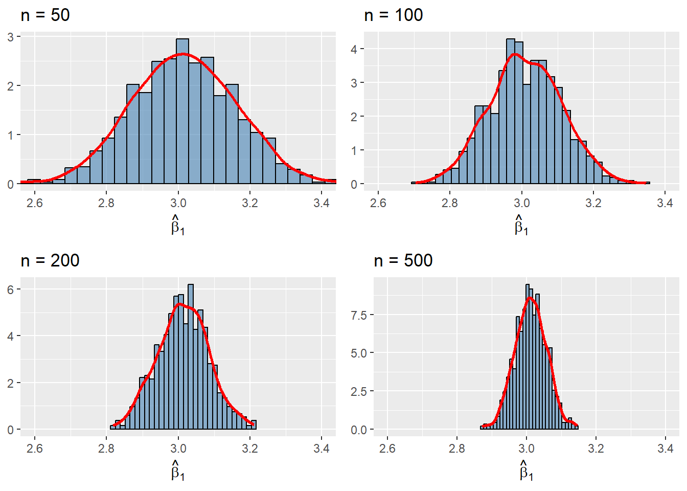

# Load necessary libraries
library(tidyverse)
library(modelsummary)
library(stargazer)
library(knitr)
library(gridExtra)
options("modelsummary_factory_default" = "gt")13 Linear Regression with One Regressor
13.1 The linear regression model
We assume that we have a random sample \(\{(Y_i, X_i)\}_{i=1}^n\) on the random variables \((Y,X)\). Then, the linear regression model between \(Y\) and \(X\) is specified as \[ \begin{align} Y_i = \beta_0 + \beta_1 X_i + u_i, \quad i=1,\dots,n, \end{align} \tag{13.1}\] where
- \(Y_i\) is the outcome (or dependent) variable,
- \(X_i\) is the explanatory (or independent) variable,
- \(\beta_0\) and \(\beta_1\) are the coefficients (or parameters) of the model, and
- \(u_i\) is the error (or disturbance) term.
In Equation 13.1, under the assumption that \(\E(u_i|X_i)=0\), the conditional mean \(\E(Y_i|X_i)\) is a linear function of \(X_i\), i.e., \(\E(Y_i|X_i)=\beta_0 + \beta_1 X_i\). This conditional mean equation is called the population regression line or the population regression function and shows the average value of \(Y_i\) for a given \(X_i\). Thus, in the linear regression model, the error term \(u_i\) denotes the difference between \(Y_i\) and \(\E(Y_i|X_i)\), i.e., \(u_i=Y_i-\E(Y_i|X_i)\) for \(i=1,\dots,n\).
13.2 Estimating the coefficients of the linear regression model
We can estimate the parameters of the model using the ordinary least squares (OLS) estimator. The OLS estimators of \(\beta_0\) and \(\beta_1\) are the values of \(b_0\) and \(b_1\) that minimize the following objective function: \[ \begin{align} \sum_{i=1}^n \left(Y_i - b_0 - b_1 X_i \right)^2. \end{align} \]
Using calculus, we can show the minimization of the objective function yields the following OLS estimators (see Appendix A for the detailed derivation): \[ \begin{align} &\hat{\beta}_1 = \frac{\sum_{i=1}^n(X_i - \bar{X})(Y_i - \bar{Y})}{\sum_{i=1}^n(X_i - \bar{X})^2} = \frac{s_{XY}}{s_X^2},\\ &\hat{\beta}_0 = \bar{Y} - \hat{\beta}_1\bar{X}, \end{align} \tag{13.2}\] where \(\bar{Y}\) and \(\bar{X}\) are the sample averages of \(Y\) and \(X\), respectively . The OLS predicted values \(\hat{Y}_i\) and residuals \(\hat{u}_i\) are \[ \begin{align} &\text{Predicted values}: \hat{Y}_i= \hat{\beta}_0 + \hat{\beta}_1 X_i \quad\text{for}\quad i =1,2,\dots,n,\\ &\text{Residuals}: \hat{u}_i = Y_i - \hat{Y}_i \quad\text{for}\quad i =1,2,\dots,n. \end{align} \]
Recall that we define the population regression function by \(\E(Y_i|X_i)=\beta_0 + \beta_1 X\). The estimated equation \(\hat{Y}_i= \hat{\beta}_0 + \hat{\beta}_1 X_i\) serves as an estimator of the population regression function. Thus, the predicted value \(\hat{Y}_i\) is an estimate of \(\E(Y_i|X_i)\) for \(i=1,\dots,n\).
There are three algebraic results that directly follow from the definition of the OLS estimators:
- The OLS residuals sum to zero: \(\sum_{i=1}^n \hat{u}_i = 0\).
- The OLS residuals and the explanatory variable are uncorrelated: \(\sum_{i=1}^n X_i\hat{u}_i = 0\).
- The regression line passes through the sample mean: \(\bar{Y} = \hat{\beta}_0 + \hat{\beta}_1 \bar{X}\).
These algebraic properties are proved in Section A.1. In Chapter 28, we extent these results to a multiple linear regression model.
13.3 Estimating the relationship between test scores and the student–teacher ratio
We consider the following regression model between test score (TestScore) and the student-teacher ratio (STR): \[ \begin{align} \text{TestScore}_i=\beta_0+\beta_1\text{STR}_i+u_i, \end{align} \tag{13.3}\] for \(i=1,2,\dots,n\).
13.3.1 Data
The dataset is the California school districts dataset provided in the caschools.xlsx (caschools.csv) file. This dataset contains information on kindergarten through eighth-grade students across 420 California school districts (K-6 and K-8 districts) in 1999. It is a district-level dataset that includes variables on average student performance and demographic characteristics. Table 13.1 provides a description of the variables in this dataset.
| Variable | Description |
|---|---|
dist_code |
District code |
read_scr |
Average reading score |
math_scr |
Average math score |
county |
County |
district |
District |
gr_span |
Grade span of district |
enrl_tot |
Total enrollment |
teachers |
Number of teachers |
computer |
Number of computers |
testscr |
Average test score (= (read_scr + math_scr)/2) |
comp_stu |
Computers per student (= computer / enrl_tot) |
expn_stu |
Expenditures per student |
str |
Student-teacher ratio (= teachers / enrl_tot) |
el_pct |
Percentage of English learners (students for whom English is a second language) |
meal_pct |
Percentage of students who qualify for a reduced-price lunch |
clw_pct |
Percentage of students who are in the public assistance program CalWorks1 |
aving |
District average income (in $1000s) |
The reading and math scores are the average test scores on the Stanford 9 Achievement Test (SAT-9) in 1999. The SAT-9 is a standardized achievement test administered to almost all students from grades 2 through 11 in California public schools. The testscr variable is the average of the reading and math scores. The summary statistics are presented in Table 13.2. Across 420 school districts, the average student-teacher ratio and the average test scores are around \(19.7\) and \(654.2\), respectively.
# Import data
CAschools <- read.csv("data/caschool.csv", sep=",", header=TRUE)# Summary statistics
datasummary_skim(CAschools[,c("str","testscr")])| Unique | Missing Pct. | Mean | SD | Min | Median | Max | |
|---|---|---|---|---|---|---|---|
| str | 412 | 0 | 19.6 | 1.9 | 14.0 | 19.7 | 25.8 |
| testscr | 379 | 0 | 654.2 | 19.1 | 605.6 | 654.4 | 706.8 |
In Figure 13.1, we present a scatter plot of the test score against the student–teacher ratio. The figure indicates a negative relationship between test scores and the student–teacher ratio; that is, as the student–teacher ratio increases, test scores tend to decrease.
ggplot(CAschools, aes(x = str, y = testscr)) +
geom_point(color = "steelblue", size = 1.5) +
labs(
x = "STR",
y = "Test Score"
)
13.3.2 Estimation Results
In R, we use the lm function from the stats package to estimate the regression model. The syntax is lm(y~x,data), where y is the dependent variable, x is the explanatory variable, and data is the data frame that contains y and x. We use the summary function to obtain the regression results.
# Estimate the regression model
model <- lm(testscr ~ str, data = CAschools)
summary(model)
Call:
lm(formula = testscr ~ str, data = CAschools)
Residuals:
Min 1Q Median 3Q Max
-47.727 -14.251 0.483 12.822 48.540
Coefficients:
Estimate Std. Error t value Pr(>|t|)
(Intercept) 698.9330 9.4675 73.825 < 2e-16 ***
str -2.2798 0.4798 -4.751 2.78e-06 ***
---
Signif. codes: 0 '***' 0.001 '**' 0.01 '*' 0.05 '.' 0.1 ' ' 1
Residual standard error: 18.58 on 418 degrees of freedom
Multiple R-squared: 0.05124, Adjusted R-squared: 0.04897
F-statistic: 22.58 on 1 and 418 DF, p-value: 2.783e-06The class of the model object is lm. This object is a list that contains the estimated coefficients, fitted values, residuals, and some other components of the model. We can use the names function to list all components of the model object.
# List the components of the model object
names(model) [1] "coefficients" "residuals" "effects" "rank"
[5] "fitted.values" "assign" "qr" "df.residual"
[9] "xlevels" "call" "terms" "model" In the following table, we describe these components.
model object
| Component | Description |
|---|---|
coefficients |
Estimated coefficients of the regression model |
fitted.values |
Fitted values: \(\hat{Y}_i=\hat{\beta}_0+\hat{\beta}_1 X_i\) |
residuals |
Residuals: \(\hat{u}_i=Y_i-\hat{Y}_i\) |
rank |
The rank of the regressors matrix |
df.residual |
Degrees of freedom of the residuals: \(n-k-1\) |
call |
The function call used to estimate the model |
model |
The data frame used to estimate the model |
We can access these components using the $ operator. Below, we provide some examples.
# Access the coefficients
model$coefficients(Intercept) str
698.932952 -2.279808 # Access the fitted values
model$fitted.values[1:5] 1 2 3 4 5
658.1474 649.8608 656.3069 659.3620 656.3659 # Summary of residuals
summary(model$residuals) Min. 1st Qu. Median Mean 3rd Qu. Max.
-47.7267 -14.2507 0.4826 0.0000 12.8222 48.5404 There are also functions to extract specific components from the model object, such as coef, fitted, and residuals. In Table 13.4, we summarize some of these functions.
# Access the coefficients
coef(model)(Intercept) str
698.932952 -2.279808 # Access the fitted values
fitted(model)[1:5] 1 2 3 4 5
658.1474 649.8608 656.3069 659.3620 656.3659 # Summary of residuals
summary(residuals(model)) Min. 1st Qu. Median Mean 3rd Qu. Max.
-47.7267 -14.2507 0.4826 0.0000 12.8222 48.5404 model object
| Function | Description |
|---|---|
coef(model) |
Estimated regression coefficients |
residuals(model) |
OLS residuals |
fitted(model) |
Predicted values |
vcov(model) |
Variance–covariance matrix of coefficients |
summary(model) |
Detailed regression output |
confint(model) |
Confidence intervals for coefficients |
logLik(model) |
Log-likelihood value |
AIC(model) |
Akaike Information Criterion |
BIC(model) |
Bayesian Information Criterion |
model.frame(model) |
Data used in estimation |
formula(model) |
Model formula |
nobs(model) |
Sample size |
13.3.3 Interpretation of results
The estimated model can be expressed as \[ \widehat{\text{TestScore}}_i = 698.933-2.279 \cdot \text{STR}_i. \]
According to the estimated model, if str increases by one then on average test scores decline by 2.28 points. Figure 13.2 shows the scatterplot between the test score and the student-teacher ratio along with the estimated regression function.
ggplot(CAschools, aes(x = str, y = testscr)) +
geom_point(color = "steelblue", size = 1.5) +
geom_smooth(method = "lm", color = "black", se = FALSE) +
labs(
x = "STR",
y = "Test Score"
)
13.4 Measures of fit and prediction accuracy
We will use two measures of fit: (i) the \(R^2\) measure and (ii) the standard error of the regression (SER). The regression \(R^2\) is the fraction of the sample variance of \(Y\) explained by \(X\). It is defined by \[ \begin{align*} R^2 &= \frac{ESS}{TSS} = \frac{\sum_{i=1}^n\left(\hat{Y}_i - \bar{\hat{Y}}\right)^2}{\sum_{i=1}^n\left(Y_i - \bar{Y}\right)^2} = 1 - \frac{\sum_{i=1}^n\hat{u}_i^2}{\sum_{i=1}^n\left(Y_i - \bar{Y}\right)^2} = 1 - \frac{SSR}{TSS}, \end{align*} \]
where
- \(ESS=\sum_{i=1}^n\left(\hat{Y}_i - \bar{\hat{Y}}\right)^2\) is the explained sum of squares,
- \(TSS=\sum_{i=1}^n\left(Y_i - \bar{Y}\right)^2\) is the total sum of squares, and
- \(SSR=\sum_{i=1}^n\hat{u}_i^2\) is the sum of squared residuals.
The SER is an estimator of the standard deviation of the regression error terms: \[ \begin{align*} SER &= s_{\hat{u}} = \sqrt{\frac{1}{n-2}\sum_{i=1}^n\left(\hat{u}_i - \bar{\hat{u}}\right)^2} =\sqrt{\frac{1}{n-2}\sum_{i=1}^n\hat{u}_i^2}=\sqrt{\frac{SSR}{n-2}} \end{align*} \] where the fourth equality is due to \(\sum_{i=1}^n \hat{u}_i = 0\), which means \(\bar{\hat{u}} = 0\). The SER has the same units as \(𝑌\) and measures the spread of the observations around the regression line.
The \(R^2\) ranges between \(0\) and \(1\), and a high value of \(R^2\) indicates that the model explains a large fraction of the variation in \(Y\). The SER is always non-negative, and a smaller value indicates that the model fits the data better.
In the output of the summary function, these measures are referred as Multiple R-squared and Residual standard error. In the following code chunk, we compute both measures of fit manually for the test score regression in Equation 13.3. The estimates are given in Table 13.5. The \(R^2=0.05\) means that the STR regressor explains \(5\%\) of the variance of the dependent variable TestScore. The SER estimate is \(18.6\), providing an estimate of the standard deviation of the error terms in units of test score points.
# Measures of fit
y <- CAschools$testscr
n <- nobs(model)
R2 <- 1 - sum(residuals(model)^2) / sum((y - mean(y))^2)
SER <- sqrt(sum(residuals(model)^2) / (n - 2))
fit_measures <- data.frame(
value = c(R2, SER),
row.names = c("R^2", "SER")
)# Measures of fit
kable(fit_measures, digits = 3, col.names = NULL)| R^2 | 0.051 |
| SER | 18.581 |
Recall that the predicted value for the \(i\)th outcome variable is defined as \(\hat{Y}_i = \hat{\beta}_0 + \hat{\beta}_1 X_i\). These predicted values are referred to as in-sample predictions when computed from the \(X_i\) values already used in the OLS estimation. If we use \(X_i\) values that are not in the estimation sample, the prediction is referred to as an out-of-sample prediction. In either case, the prediction error is given by \(Y_i - \hat{Y}_i\). For the standard deviation of both in-sample and out-of-sample prediction errors, we can use \(s_{\hat{u}}\). Thus, a model will produce relatively accurate predictions if it has a relatively smaller \(s_{\hat{u}}\). Therefore, we usually report \(\hat{Y}_i \pm s_{\hat{u}}\) along with the predicted value \(\hat{Y}_i\). For the test score regression in Equation 13.3, we provide the plots of the predicted values along with those of \(\hat{Y}_i \pm s_{\hat{u}}\) in Figure 13.3.
# In-sample predicted values
fitted_vals <- fitted(model)
s_u_hat <- sqrt(sum(residuals(model)^2) / model$df.residual)
plot_data <- data.frame(
str = CAschools$str,
testscr = CAschools$testscr,
fitted = fitted_vals,
upper = fitted_vals + s_u_hat,
lower = fitted_vals - s_u_hat
)
ggplot(plot_data, aes(x = str)) +
geom_point(
aes(y = testscr),
color = "black",
alpha = 0.7,
size = 1.5
) +
geom_line(
aes(y = fitted, color = "Yhat"),
linewidth = 0.8
) +
geom_line(
aes(y = upper, color = "Upper"),
linewidth = 0.8
) +
geom_line(
aes(y = lower, color = "Lower"),
linewidth = 0.8
) +
labs(
x = "Student-teacher ratio",
y = "Test score",
color = ""
) +
scale_color_manual(
values = c(
"Yhat" = "steelblue",
"Upper" = "red",
"Lower" = "green"
),
labels = c(
"Yhat" = expression(hat(Y)),
"Upper" = expression(hat(Y) + s[hat(u)]),
"Lower" = expression(hat(Y) - s[hat(u)])
)
) +
theme(legend.position = "right")
13.5 The least squares assumptions for causal inference
In this section, we provide the least square assumptions. These assumptions ensure two important results. First, under these assumptions, we can interpret the slope parameter \(\beta_1\) as the causal effect of \(X\) on \(Y\). Second, these assumptions ensure that the OLS estimator has large sample properties, namely consistency and asymptotic normal distributions. We list these assumptions below.
The first assumption has important implications. First of all, it suggests that \(\E(u_i)=\E(\E(u_i|X_i))=0\), where we use the law of iterated expectations. Second, we can show that \[ \E(u_i |X_i) = 0\implies \corr(X,u_i)=0, \] where the last equality again follows from the law of iterated expectations. Then, the contrapositive of this statement gives the following useful result: \[ \corr(X,u_i)\ne 0\implies \E(u_i |X_i)\ne 0. \]
This last result is important because it provides a way to check the plausibility of the zero-conditional mean assumption. If we think that the error term \(u_i\) is likely to include a variable that is correlated with the regressor \(X_i\), then we can claim that \(\E(u_i |X_i)\ne 0\).
In the following code chunk, we consider two data-generating processes to illustrate the zero-conditional mean assumption. We assume that the zero-conditional mean assumption holds in the first process but is violated in the second. In both cases, we assume that \(X\) takes integer values between \(-4\) and \(4\): x_values <- sample(-4:4, size = size, replace = TRUE). In the first process, we generate the error terms independently from the standard normal distribution, i.e., \(u \sim N(0, 1)\). In this case, since \(u\) is independent of \(X\), we have \(\E(u|X)=\E(u)=0\). In contrast, in the second process, we generate the error terms according to \(u \sim N(0.5X, 1)\) so that \(\E(u|X)=0.5X\).
In Figure 13.4, we use boxplots to present the distribution of \(u\) against \(X\). In Figure 13.4(a), the conditional mean of \(u\) remains close to zero across all values of \(X\). Thus, in this case, \(\E(u|X)=0\) holds. On the other hand, Figure 13.4(b) shows that the mean of \(u\) varies with \(X\), indicating that \(\E(u|X)\) depends on \(X\).
# Generate data
generate_data <- function(seed, size, zero_conditional_mean = TRUE) {
set.seed(seed)
x_values <- sample(-4:4, size = size, replace = TRUE)
if (zero_conditional_mean) {
u_values <- rnorm(size)
} else {
u_values <- rnorm(size) + 0.5 * x_values
}
data.frame(
x = factor(x_values),
u = u_values
)
}
plot_boxplot <- function(df) {
ggplot(df, aes(x = u, y = x, fill = x)) +
geom_boxplot(
width = 0.6,
outlier.shape = NA,
alpha = 0.8
) +
geom_jitter(
height = 0.15,
size = 0.8,
color = "gray30",
alpha = 0.6
) +
scale_fill_brewer(palette = "RdBu") +
labs(
x = "u",
y = "X"
) +
coord_cartesian(xlim = c(-5, 5)) +
theme(
legend.position = "none"
)
}
df1 <- generate_data(seed = 45, size = 2000, zero_conditional_mean = TRUE)
df2 <- generate_data(seed = 45, size = 2000, zero_conditional_mean = FALSE)
plot_boxplot(df1)
plot_boxplot(df2)

The second assumption requires a random sample on \(X\) and \(Y\). This assumption generally holds because data are usually collected on a randomly selected sample from the population of interest.
The final assumption requires that \(X\) and \(Y\) cannot take large values. We need this assumption because the OLS estimator is sensitive to large values in the data set. This assumption is stated in terms of the fourth moments of \(X\) and \(Y\), and is also used to establish the asymptotic normality of the OLS estimators, as shown in Chapter 28.
13.6 The sampling distribution of the OLS estimators
We first show that the OLS estimators given in Equation 13.2 are unbiased estimators. From \(Y_i=\beta_0+\beta_1X_i+u_i\) and \(\bar{Y}=\beta_0+\beta_1\bar{X}+\bar{u}\), we obtain \[ \begin{align} Y_i-\bar{Y}=\beta_1(X_i-\bar{X})+(u_i-\bar{u}). \end{align} \tag{13.4}\]
Then, substituting Equation 13.4 into Equation 13.2 yields \[ \begin{aligned} \hat{\beta}_1 &= \frac{\sum_{i=1}^n(X_i - \bar{X})(Y_i - \bar{Y})}{\sum_{i=1}^n(X_i - \bar{X})^2} =\frac{\sum_{i=1}^n(X_i - \bar{X})\left(\beta_1(X_i-\bar{X})+(u_i-\bar{u})\right)}{\sum_{i=1}^n(X_i - \bar{X})^2}\\ &=\beta_1+\frac{\sum_{i=1}^n(X_i - \bar{X})(u_i-\bar{u})}{\sum_{i=1}^n(X_i - \bar{X})^2}. \end{aligned} \tag{13.5}\]
Since \(\sum_{i=1}^n(X_i - \bar{X})(u_i-\bar{u})=\sum_{i=1}^n(X_i-\bar{X})u_i\), we obtain \[ \begin{align} \hat{\beta}_1=\beta_1+\frac{\sum_{i=1}^n(X_i - \bar{X})u_i}{\sum_{i=1}^n(X_i - \bar{X})^2}. \end{align} \tag{13.6}\]
We can use Equation 13.6 to determine \(\E(\hat{\beta}_1|X_1,\dots,X_n)\):
\[ \begin{align} \E(\hat{\beta}_1|X_1,\dots,X_n) &= \beta_1+\E\left(\frac{\sum_{i=1}^n(X_i - \bar{X})u_i}{\sum_{i=1}^n(X_i - \bar{X})^2}\bigg|X_1,\dots,X_n\right)\nonumber\\ &= \beta_1+\frac{\sum_{i=1}^n(X_i - \bar{X})\E\left(u_i|X_1,\dots,X_n\right)}{\sum_{i=1}^n(X_i - \bar{X})^2}. \end{align} \]
Under Assumptions 1 and 2, we have \(\E\left(u_i|X_1,\dots,X_n\right)=\E(u_i|X_i)=0\), suggesting that \(\E(\hat{\beta}_1|X_1,\dots,X_n)=\beta_1\). Finally, the unbiasedness of \(\hat{\beta}_1\) follows from the law of iterated expectations: \[ \begin{align} \E(\hat{\beta}_1) = \E\left(\E\left(\hat{\beta}_1|X_1,\dots,X_n\right)\right) = \E(\beta_1)=\beta_1. \end{align} \]
Similarly, for \(\hat{\beta}_0\), we have \[ \begin{align} \E(\hat{\beta}_0|X_1,\dots,X_n) &= \E(\bar{Y} - \hat{\beta}_1\bar{X}|X_1,\dots,X_n)\\ &= \E(\bar{Y}|X_1,\dots,X_n)-\bar{X}\E(\hat{\beta}_1|X_1,\dots,X_n)\\ &= \beta_0+\bar{X}\beta_1-\bar{X}\beta_1=\beta_0. \end{align} \] where the third equality follows from \(\E(\bar{Y}|X_1,\dots,X_n)=\beta_0+\bar{X}\beta_1\). Then, it follows from the law of iterated expectations that \[ \begin{align} \E(\hat{\beta}_0) = \E\left(\E\left(\hat{\beta}_0|X_1,\dots,X_n\right)\right) = \E(\beta_0)=\beta_0. \end{align} \]
Let \(\mu_X\) and \(\sigma^2_X\) be the population mean and variance of \(X\). In the following theorem, we show the asymptotic distributions of the OLS estimators.
Theorem 13.1 (Asymptotic distributions of the OLS estimators) Under the least squares assumptions, we have \(\E(\hat{\beta}_0) = \beta_0\) and \(\E(\hat{\beta}_1) = \beta_1\), i.e, the OLS estimators are unbiased. In large samples, \(\hat{\beta}_0\) and \(\hat{\beta}_1\) have a joint normal distribution. Specifically, \[ \begin{align*} &\hat{\beta}_1 \stackrel{A}{\sim} N\left(\beta_1, \sigma^2_{\hat{\beta}_1}\right),\,\text{where}\quad\sigma^2_{\hat{\beta}_1} = \frac{1}{n}\frac{\var\left((X_i - \mu_X)u_i\right)}{\left(\sigma^2_X\right)^2},\\ &\hat{\beta}_0 \stackrel{A}{\sim} N\left(\beta_0, \sigma^2_{\hat{\beta}_0}\right),\, \text{where}\quad\sigma^2_{\hat{\beta}_0} = \frac{1}{n}\frac{\var\left(H_i u_i\right)}{\left(\E(H_i^2)\right)^2}\,\,\text{and}\,\, H_i = 1 - \frac{\mu_X}{\E(X_i^2)}X_i. \end{align*} \]
We prove Theorem 13.1 in Chapter 27. There are three important observations from Theorem 13.1:
- The OLS estimators are unbiased.
- The variance of the OLS estimators are inversely proportional to the sample size \(n\).
- The sampling distributions of the OLS estimators are approximated by the normal distributions when the sample size is large.
We investigate the properties of the OLS estimators in the simulation setting given in the following code chunk. We assume that the population regression model is given by \(Y_i=\beta_0+X_i\beta_1+u_i\), where \(\beta_0=1.5\), \(\beta_1=3\), \(X_i\sim N(0,1)\), and \(u_i\sim N(0,1)\). We first assume that the population size is \(N=5000\) and then generate the population data. We consider four sample size with \(n\in \{50, 100, 200, 500\}\). For each sample size, we generate \(1000\) samples from the population and estimate the model with each sample. Thus, we obtain \(1000\) estimates of \(\beta_0\) and \(\beta_1\) for each sample size. We then construct the histograms of these estimates along with the kernel density plots. The simulation results are shown in Figure 13.5.
Each histogram and kernel density plot in Figure 13.5 is centered around the true value \(\beta_1=3\), indicating that the OLS estimator \(\hat{\beta}_1\) is unbiased. The shape of the histograms and kernel density plots are bell-shaped, suggesting that the sampling distribution of the OLS estimator \(\hat{\beta}_1\) resembles the normal distribution. We also observe that the variance of the OLS estimator decreases as \(n\) increases from \(50\) to \(500\). All of these observations are consistent with Theorem 13.1.
# Set seed for reproducibility
set.seed(45)
# Number of repetitions
reps <- 1000
# Sample sizes
n_vals <- c(50, 100, 200, 500)
# Population regression model
N <- 5000
X <- rnorm(N)
Y <- 1.5 + 3 * X + rnorm(N)
population <- data.frame(X = X, Y = Y)
# Function to run the simulation for a given sample size
simulate_beta <- function(size, reps, population) {
beta_hat <- numeric(reps)
for (i in seq_len(reps)) {
sample_data <- population[sample(nrow(population), size, replace = TRUE), ]
model <- lm(Y ~ X, data = sample_data)
beta_hat[i] <- coef(model)[2]
}
beta_hat
}
# Generate individual plots
plots <- lapply(n_vals, function(size) {
beta_hat <- simulate_beta(size, reps, population)
ggplot(data.frame(beta = beta_hat), aes(x = beta)) +
geom_histogram(
aes(y = after_stat(density)),
bins = 30,
fill = "steelblue",
alpha = 0.6,
color = "black"
) +
geom_density(color = "red", linewidth = 1) +
coord_cartesian(xlim = c(2.6, 3.4)) +
labs(
title = paste0("n = ", size),
x = expression(hat(beta)[1]),
y = NULL
)
})
# Arrange plots in a 2x2 grid
grid.arrange(
grobs = plots,
nrow = 2,
ncol = 2
)
In the next chapter, we will show how to formulate estimators for \(\sigma^2_{\hat{\beta}_1}\) and \(\sigma^2_{\hat{\beta}_0}\) given in Theorem 13.1. We will also show how to use these estimators to conduct hypothesis tests and construct confidence intervals for the parameters \(\beta_0\) and \(\beta_1\).
For the details, see https://www.cdss.ca.gov/calworks.↩︎